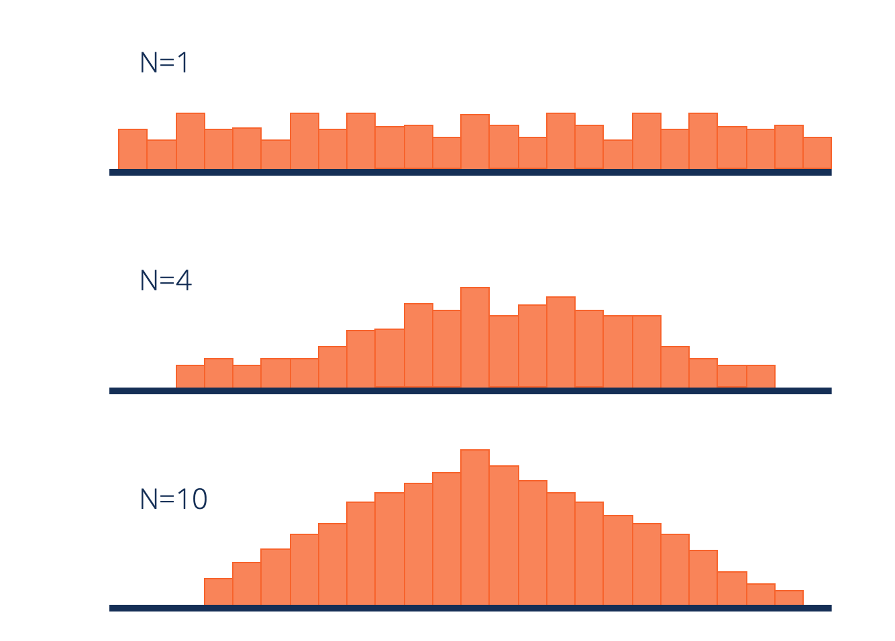

← home
Th2: The CLT Meaning, Proof, Simulations
The
Central Limit Theorem (CLT) is one of the most important results in probability theory. It states that, under certain conditions, the sum of a large number of random variables is approximately normal.
The Central Limit Theorem states that if you have a population with mean \(\mu\) and standard deviation \(\sigma\) and take sufficiently large random samples from the population with replacement, then the distribution of the sample means will be approximately a normal distribution.
No matter whether the source population is normal or skewed, provided the sample size is sufficiently large (usually \(n \geq 30\)).
So, if we take random samples (with replacement) of size \(n \geq 30\) from the population and compute the mean for each of the samples, the distribution of sample means should be approximately normal according to the Central Limit Theorem.
Suppose that \(X_1, X_2, ..., X_n\) are i.i.d random variables (a random sample of independent observations from a population) with expected values \(\mu < \infty\) and variance \(\sigma^2 < \infty\). Then, the sample mean of that sample (which is itself a random variable) \(\bar{X}=\frac{X_1+X_2+...+X_n}{n}\) has mean \(\mu\) and variance \(\frac{\sigma^2}{n}\). Thus, the
normalized sample mean
\[Z_n=\frac{\bar{X}-\mu}{\sigma/\sqrt{n}}=\frac{X_1+X_2+...+X_n-n\mu}{\sqrt{n}\sigma}\]
has mean
\(E[Z_n]=0\) and variance
\(Var(Z_n)=1\).
Note A normalized random variable refers to a random variable that has been adjusted or transformed in such a way that its values conform to a specific distribution with well-defined properties. Normalization typically involves subtracting the mean of the random variable and dividing by its standard deviation. This transformation ensures that the resulting variable \(Z\) has a mean of 0 and a standard deviation of 1.
The Central Limit Theorem states that the CDF (cumulative distribution function) of \(Z_n\) converges to the standard normal CDF.
The Central Limit Theorem (CLT)
Let \(X_1, X_2, ..., X_n\) be i.i.d random variables with expected value \(\mu < \infty\) and variance \(\sigma^2 < \infty\). Then, the normalized random variable
\[Z_n=\frac{\bar{X}-\mu}{\sigma/\sqrt{n}}=\frac{X_1+X_2+...+X_n-n\mu}{\sqrt{n}\sigma}\]
converges in distribution to the standard normal random variable as \(n\) goes to infinity, that is
\[\lim_{n\to\infty} P(Z_n \leq x) = \Phi(x),\:\:for\:\:all\:\:x \in \mathbb{R}\]
where \(\Phi(x)\) is the standard normal CDF.
In other words, suppose that a large sample of observations is obtained, each observation being randomly produced in a way that does not depend on the values of the other observations, and that the average (arithmetic mean) of the observed values is computed. If this procedure is performed many times, resulting in a collection of observed averages, the central limit theorem says that if the sample size was large enough, the probability distribution of these averages will closely approximate a normal distribution.
This theorem has several variants and applications in probability theory and statistics. It’s important to note that the random variables must be independent and identically distributed (i.i.d.). However, this requirement can be weakened; convergence of the mean to the normal distribution also occurs for non-identical distributions or for non-independent observations if they comply with certain conditions.
The CLT is a key concept because it implies that probabilistic and statistical methods that work for normal distributions can be applicable to many problems involving other types of distributions.
The Central Limit Theorem makes it easy to understand how population estimates behave when subjected to repeated sampling. When plotted on a graph, the theorem shows the shape of the distribution formed by means of repeated population samples.
As the sample sizes get bigger, the distribution of the means from the repeated samples tends to normalize and resemble a normal distribution. The result remains the same regardless of what the original shape of the distribution was. It can be illustrated in the figure below:

From the figure above, we can deduce that despite the fact that the original shape of the distribution was uniform, it tends towards a normal distribution as the value of n (sample size) increases.
Intuitive Proof
The Central Limit Theorem (CLT) is a fundamental concept in probability and statistics, stating that the distribution of the sum (or average) of a large number of independent, identically distributed random variables approaches a normal distribution, regardless of the original distribution of the variables.
Intuition:
Imagine you have a group of people each rolling a fair six-sided die. The outcome of each roll is a random variable with a uniform distribution between 1 and 6. Now, consider the sum of the numbers rolled by this group of people.
Step 1: Individual Random Variables
The distribution of a single die roll is uniform, but as you add more and more die rolls together, the distribution of the sum starts to look more like a bell curve.
Step 2: Many Independent Random Variables
As you increase the number of people rolling dice (or the number of dice rolls per person), you are effectively adding more independent random variables. The Central Limit Theorem assumes that these variables are independent and identically distributed.
Step 3: Convergence to Normal Distribution
According to the Central Limit Theorem, as the number of people rolling dice increases, the distribution of the sum of the rolls approaches a normal distribution. This happens because of the "smoothing out" effect of many independent random variables, even if each individual variable does not follow a normal distribution.
Mathematical Insight:
Mathematically, if \(X_1, X_2, ..., X_n\) are independent and identically distributed random variables with a finite mean \(\mu\) and variance \(\sigma^2\), then the sum \(S_n = X_1 + X_2 + ... + X_n\) approaches a normal distribution as \(n\) becomes large, with a mean \(n\mu\) and a variance \(n\sigma^2\). The standardized form of \(S_n\) converges to a standard normal distribution.
\[S_n \sim N(n\mu, n \sigma^2) \]
In the context of our dice example, as you roll more and more dice, the sum of the numbers rolled approaches a normal distribution, and this distribution becomes more symmetric and bell-shaped.
Sources
[1] https://www.probabilitycourse.com/chapter7/7_1_2_central_limit_theorem.php
[2] https://www.statisticshowto.com/probability-and-statistics/normal-distributions/central-limit-theorem-definition-examples/
[3] https://sphweb.bumc.bu.edu/otlt/mph-modules/bs/bs704_probability/BS704_Probability12.html
[4] https://corporatefinanceinstitute.com/resources/data-science/central-limit-theorem/